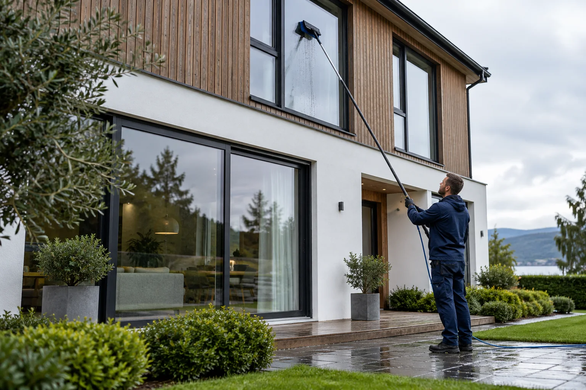

01⌑
Enebolig og rekkehus
Utvendig vask av vinduer hjemme hos deg. Vi avklarer antall vinduer og tilkomst før vi avtaler jobben.
Spør om pris ↗Vi vasker utvendige vinduer med rentvann og børste for boliger, sameier og bedrifter i Bergen og omegn.

Enkel bestillingFortell oss hva du trenger
Avklart på forhåndDu får svar før vi starter
Ryddig gjennomføringArbeidet tilpasses stedet
Vi vasker utvendige vinduer og tilpasser oppdraget etter bygget og tilkomsten. Send oss adresse og ønsket omfang, så gir vi deg et tilbud.
Utvendig vask av vinduer hjemme hos deg. Vi avklarer antall vinduer og tilkomst før vi avtaler jobben.
Spør om pris ↗Utvendig vindusvask for boligselskaper, med planlagt gjennomføring og tydelig informasjon.
Be om et tilbud ↗Utvendig vask av vinduer på kontorer, butikker og andre næringslokaler i Bergen og omegn.
Ta kontakt ↗Du får en enkel og forutsigbar prosess. Vi avklarer omfang og praktiske forhold før vi setter opp tidspunkt.
Start med en forespørsel ↗Send adresse, type bygg og gjerne et bilde eller noen ord om vinduene.
Vi går gjennom tilkomst, antall vinduer og hva du ønsker vasket.
Vi avtaler pris og et tidspunkt som passer før arbeidet settes i gang.
Vi utfører utvendig vindusvask med rentvann og børste der forholdene ligger til rette.
Vi vasker utvendige vinduer i Bergen, Askøy, Øygarden, Alver og Bjørnafjorden. Send oss adressen, så avklarer vi om vi kan hjelpe.
Send en forespørsel, så tar vi kontakt for å avklare omfang, pris og tidspunkt. Forespørselen er uforpliktende.
Ring oss direkte920 98 742post@hsrens.no